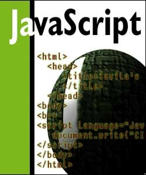

Acerca de la materia
Lenguaje interpretado por el cliente.
Jorge Alberto García Mendoza, estudiante de 3° año, informática III - Pilet - Carné: GM131894.
La materia impartida por: Issela Mejía, es una materia donde aprendimos a hacer paginas web a nivel de cliente, donde no guardamos ningun dato, sino solo mostrar resultados en el momento que el usuario hace uso de la misma.
Tambiém, una materia donde aprendimos diferentes temas, dentro de ellas:
- Uso de JavaScript
- HTML5
- Uso de Formularios
- DOM
- Expresiones regulares
Para mí, es una materia muy interesante debido a que es algo basico y que con tan solo poder aplicar todo lo visto durante el ciclo, pudimos hacer cosas que nunca pudimos imaginar sin la ayuda de una base de datos.
También, recordandonos de como se hacian usos del if, else, switch, for... Lo que causa que al comenzar hubieramos tenido un poco de dificultad.
LIC



3° Informática III © Jorge Alberto García Mendoza. Lenguaje Interpretado por el Cliente
Información Personal | Sugerencia